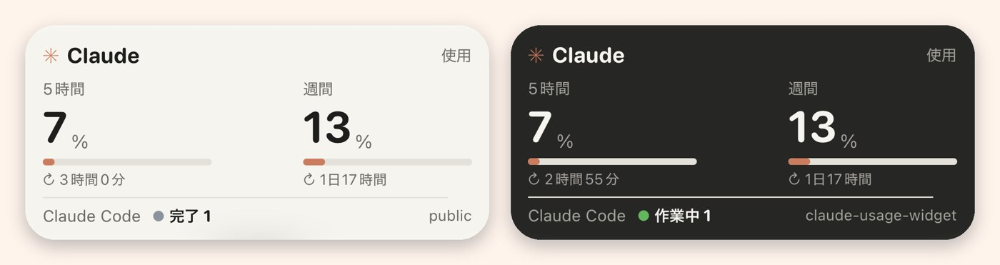
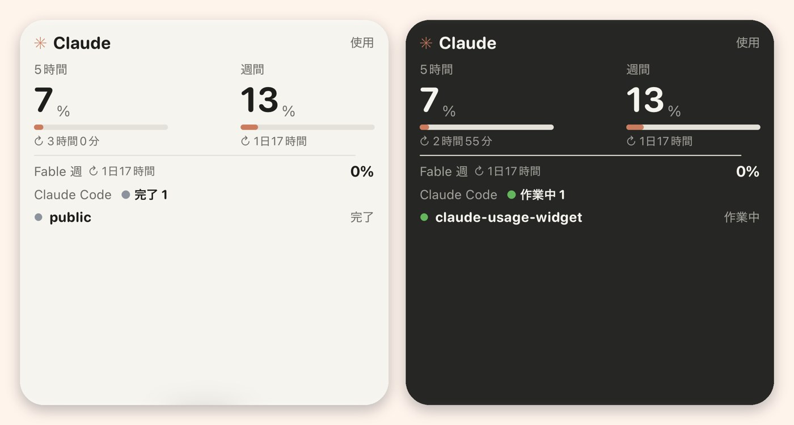

完成イメージ


できること
- 使用量がひと目で分かる5時間・週間・Fable 週などの使用率と、リセットまでの時間
- Claude Code の様子が分かる作業中／入力待ち／完了を、席を離れていても確認
- ホーム画面にもロック画面にも小・中・大サイズとロック画面に対応。Mac のデスクトップにも置けます
用意するもの
- Mac と iPhone
- Claude の Pro または Max プラン
- iPhone アプリ「Scriptable」（無料）
- Mac と iPhone の iCloud Drive がオンになっていること
所要時間は 10 分ほどです。
1
事前準備
iPhone と Mac で
iCloud Drive をオンにする
- iPhone：「設定」→ いちばん上の自分の名前 →「iCloud」→「iCloud Drive」をオン
- Mac：画面左上の →「システム設定」→ 自分の名前 →「iCloud」→「iCloud Drive」をオン
Scriptable を入れて、一度開く
- App Store で「Scriptable」を入れます。
- 一度開いて閉じます。これで Mac とつながるフォルダが作られます。
iCloud Drive の設定画面で「同期しているアプリ」の一覧がなかなか表示されなくても、そのまま進めて大丈夫です。
2
Mac でインストール
Mac で
- ターミナルを開きます。
⌘ command＋スペースを押して「ターミナル」と入力し、returnキーを押します。 - 下のコマンドをコピーして、ターミナルに貼り付け（
⌘ command＋V）、returnキーを押します。
curl -fsSL https://raw.githubusercontent.com/shikumake/claude-usage-widget/main/install.sh | bash
- 「キーチェーン」の確認が出たら、Mac のパスワードを入れて「常に許可」を押します。
- 最後に「5時間: ○% 週間: ○%」と表示されれば成功です。
- Claude Code を使っている途中なら、一度終了して起動し直します。
「Claude Code のログイン情報がキーチェーンにありません」と出たら
Claude のデスクトップアプリだけを使っている場合に出ます。ターミナルで下の2つを順に実行し、起動した画面で「Claude account with subscription」を選んでログインしてください。ログインできたら
/exit で閉じ、もう一度インストールのコマンドを実行します。
curl -fsSL https://claude.ai/install.sh | bash
~/.local/bin/claude
Claude Code に任せる方法
Claude Code に「https://github.com/shikumake/claude-usage-widget の README を読んでインストールして」と頼むと、インストールからエラーへの対応まで進めてくれます。
Claude Code に「https://github.com/shikumake/claude-usage-widget の README を読んでインストールして」と頼むと、インストールからエラーへの対応まで進めてくれます。
3
iPhone にウィジェットを置く
iPhone で
- Scriptable を開き、一覧の「Claude Usage」をタップします。使用量が表示されれば準備完了です。
（一覧にないときは、数分待ってから開き直してください） - ホーム画面の空いているところを長押し →「編集」→「ウィジェットを追加」→「Scriptable」→ 好きなサイズを追加します。中サイズがおすすめです。
- 置いたウィジェットを長押し →「ウィジェットを編集」→「Script」で「Claude Usage」を選びます。
「Parameter」に入れる言葉で表示を変えられます（空白で区切って組み合わせ可。例：
残り ダーク）。
残り：使った％ではなく残りの％で表示ダーク／ライト：iPhone の設定に関係なく、その色で表示（空欄なら iPhone のライト／ダークに自動で合わせます）
ロック画面にも置く（お好みで）
- ロック画面を長押し →「カスタマイズ」→「ロック画面」を選びます。
- 時計の下のウィジェット欄をタップし、「Scriptable」の長方形を追加します。
- 追加したウィジェットをタップして、Script に「Claude Usage」を選びます。
ロック画面のウィジェットは、iOS の仕様で横幅の半分までの大きさです。
4
自動更新を設定する（おすすめ）
iPhone の「ショートカット」アプリで
ホーム画面のウィジェットは、iOS の都合で新しいデータを取り込めず、古い表示のままになることがあります。よく開くアプリを開いたときに裏でデータを取り込むようにしておくと、いつも新しい表示になります。
- 「ショートカット」アプリの「オートメーション」→「＋」をタップします。
- 説明の入力欄が出たら、次の文を入力します。
（説明の入力欄が出ない場合は、きっかけに「App」を選び、よく開くアプリの「開いている」を選びます）LINE、X、Safari のどれかを開いたときに実行するオートメーションを作って
- できたら右上の「編集」を押し、アクションの検索で「Scriptable」と入力して「Run Script」を追加します。
- Script に「Claude Usage」を選び、「Run In App」と「実行時に表示」をオフにします。
- きっかけの右の「＞」から、「すぐに実行」を選び、「実行時に通知」をオフにします。
LINE・X・Safari の部分は、毎日よく開くアプリに変えてかまいません。設定後は、それらのアプリを開くたびに裏でデータが新しくなります。
これで完了です
Mac が起きている間は、5分おきに使用量を更新します。Claude Code の状態はすぐに反映されます。
iPhone のウィジェットは iOS の都合で十数分おきくらいに更新されます。Mac がスリープ中は更新が止まり、データが古くなると右上に最終更新の時刻が赤字で出ます。
困ったとき
ウィジェットに「データがまだありません」と出る
Scriptable アプリで「Claude Usage」を一度タップして実行します。そのあとホーム画面のウィジェットを長押しして削除し、もう一度追加してください。
「Scriptable の iCloud フォルダがまだありません」と出る
Mac と iPhone の iCloud Drive がオンになっているか確認し、iPhone で Scriptable を一度開いてから、インストールのコマンドをもう一度実行してください。フォルダが Mac に届くまで数分かかることがあります。
「ログイン情報の期限切れ」と出る
通常は自動で更新されます。続く場合は、ターミナルで
~/.local/bin/claude を実行して起動し、/exit で閉じてください。数値がずっと変わらない・右上に赤字で「更新 ○:○○」と出る
Mac がスリープ中は更新されません。Mac が起きているのに古いままなら、Scriptable アプリを一度開くと新しくなります。毎回開かなくて済むように、STEP 4 の自動更新を設定してください。
今の状態を確認したい
ターミナルで次を実行すると、取得した使用量と記録中のセッションが表示されます。
python3 ~/.claude-widget/claude_widget.py show
やめたいとき
ターミナルで次を実行すると、Mac の設定がすべて元に戻ります。iPhone の Scriptable にある「Claude Usage」は手動で削除してください。
curl -fsSL https://raw.githubusercontent.com/shikumake/claude-usage-widget/main/uninstall.sh | bash
安全性について
- Claude のログイン情報は、Mac のキーチェーンから読むだけです。
- 通信先は Anthropic（
api.anthropic.com）だけです。ほかのサーバーには何も送りません。 - iCloud に保存するのは、使用率・リセット時刻・プロジェクト名・稼働状況だけです。
- コードはすべて GitHub で公開しています。
非公式ツールです
Anthropic とは関係ありません。使用量の取得に公開されていない仕組みを使っているため、仕様変更で動かなくなることがあります。動かなくなったときは、LINE でお知らせします。ご利用は自己責任でお願いします。